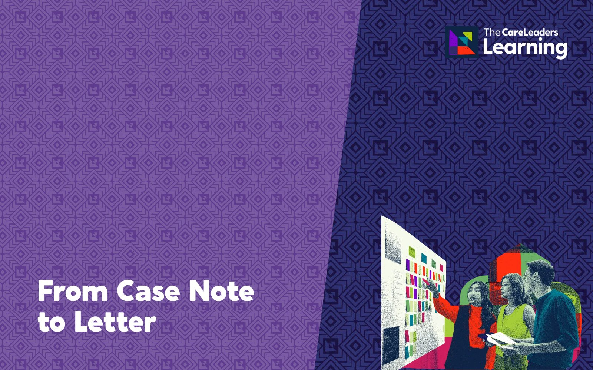

The words we use become their story.
For social care teams, schools and leaders who want children in care talked about the way any child is talked about. Your team looks hard at words like LAC, placement, contact and absconding, agrees the alternatives children and young people have asked for, and leaves with a language guide your service can adopt. Children start hearing themselves described as children, not cases.
- Length
- 6 hours face to face, usually 10am to 4pm. 2 hours live online
- How
- Face to face or live online
- Group
- Up to 60 people
- For
- Social care teams, schools, leaders and corporate parenting boards

Words like LAC, placement, contact and absconding end up in letters, review reports and the way staff talk to and about children. Nobody picks them to hurt anyone. They are habits, handed on through templates and case notes. Children notice. In TACT’s Language that Cares guide, developed in 2019 with Children in Care Councils in 11 areas, young people asked for “family time” instead of contact and “our home” instead of placement. A list of banned words rarely changes habits. So every part of this course starts with how a word lands for a child, explains why labels stick, and ends with a rewrite or a plan your team uses the next day.
What changes
- Use children’s names and everyday words in conversation, meetings and writing instead of acronyms and service labels.
- Choose agreed alternatives to terms such as contact, placement, respite and absconding.
- Check letters, reports and templates for language that labels a child, and rewrite them.
- Explain to a colleague, parent or partner agency why a word has changed.
- Raise jargon with colleagues without turning it into a telling off.
- Hear themselves described as children, not as a case or a category.
- Read letters and reports written in words they would use.
- Are not singled out by service jargon at school or in meetings.
- See that when they asked for a word to change, it changed.
Story
- Describe how words such as “LAC review”, “placement” and “contact” sound to a child hearing them about themselves at school, in a review or in a letter.
- Recognise the terms in your own letters, reports and conversations that children in care are most likely to find stigmatising.
Theory
- Explain, using Howard Becker’s labelling theory (1963) and Erving Goffman’s work on stigma (1963), how a label can change how adults see a child and how the child sees themselves.
- Describe when a formal term such as “looked after” still has to be used, for example in court and statutory documents, and how to explain it to a child.
Action
- Use Language that Cares to swap common service terms for alternatives that keep the meaning and lose the stigma, such as “family time” for contact, and rewrite a letter or report section in words a child would choose without losing accuracy.
- Plan the changes to your service’s templates, policies and induction that will make the new words stick, with a named owner for each.
- Social work, fostering, residential and leaving care teams
- Schools, designated teachers and virtual schools
- Leaders and business support staff who own policies, letters and templates
- Corporate parenting boards and elected members
- Up to 60 people, and mixed roles work well. No prior knowledge is needed. A recent anonymised letter or report from your service makes the rewriting real, but it is not essential.
Session by session
 Story
Story Theory
Theory Action
Action
Every part starts with how a word lands for a child, explains why it sticks, and ends with a rewrite or a plan your team uses the next day. The stories are composites. They draw on real experiences of care but are not one person. Open a part to see what happens.
1Hear it
Story. Demi, 11, is called out of maths for her “LAC review”. When she gets back, a classmate asks what LAC means. She says she doesn’t know. She knows exactly what it means. She just doesn’t want anyone else to.
Theory. Howard Becker’s labelling theory (1963) explains how a label given by people with power starts to shape how others treat someone, and then how that person sees themselves. Erving Goffman’s work on stigma (1963) explains why children put so much effort into hiding a label that marks them out.
Action. The room lists the words your service uses most about children, then says each one out loud as if speaking to a child, by name. Anything that sounds wrong said to a child goes on the swap list. Tables then compare lists and agree the words to tackle first.
By the end of this part people can name the words their service uses most and explain how a child is likely to hear each one.
 You leave with A list of the words your service uses most, and how children are likely to hear them.
You leave with A list of the words your service uses most, and how children are likely to hear them.
2Swap it
Story. Jayden, 14, sees his mum once a month at a family centre. Every adult calls it contact. He calls it seeing my mum, and he can’t work out why adults need a different word for it.
Theory. TACT’s Language that Cares (2019), written with Children in Care Councils in 11 areas, sets out what young people asked for instead, such as “family time” for contact and “our home” for placement. We also cover where formal terms such as “looked after” come from legislation and still have to be used.
Action. Language that Cares. Groups take each word from part 1, agree an alternative that keeps the meaning, test it in a sentence they actually say at work, and mark the few places where the formal term has to stay. Each group then shares its swaps and the room agrees one list.
By the end of this part people can offer an everyday alternative for the common service terms and say when the formal term is still needed.
 You leave with A swap list of common terms and agreed alternatives.
You leave with A swap list of common terms and agreed alternatives.
3Write it
Story. Shannon, 17, asks to read her file. The first page describes her as “a LAC female, placed out of area, with a history of absconding”. She closes it and doesn’t open it again for years.
Theory. Anyone can ask to see the records held about them under data protection law, and many care-experienced adults do. A record has to be accurate. Accurate and kind are not opposites: the child’s name, plain words and a description of what happened keep the facts and lose the label.
Action. Staff rewrite real, anonymised letters and report sections, then swap with a partner who reads them as Shannon would and marks anything that still labels her. Everyone then rewrites a second piece. The best rewrites become the team’s before and after examples.
By the end of this part people can rewrite a letter or report section in plain words a child could read, without losing the accuracy the record needs.
 You leave with Before and after versions of the letters and reports your team writes most.
You leave with Before and after versions of the letters and reports your team writes most.
4Spread it
Story. Holly, 15, sits on her Children in Care Council. A year ago the council asked for “contact” to go. The letters she gets still say it, because nobody changed the template.
Theory. Words change when the systems that produce them change: templates, drop-downs in the case recording system, policies and induction. Lists sent round by email get ignored. Changes children asked for, and staff helped shape, are the ones that last.
Action. Groups list every place a word lives in your service, from the review invitation template to the case recording system, name who owns each one, set a date, and plan how children will be told the word has changed.
By the end of this part people can plan the changes to templates, policies and induction that will make the new words stick, with a named owner and a date for each.
 You leave with A draft language guide for your service, with a plan to roll it out.
You leave with A draft language guide for your service, with a plan to roll it out.
Choose how you run it
We come to you for a training day, 10am to 4pm. The day covers all four parts, with time to rewrite your own letters and reports, and ends with a draft language guide for your service.
- Length
- One day, 10am to 4pm
- Group
- Up to 60 people
- You provide
- A room set up for small-group work and a screen with HDMI. A few recent anonymised letters or reports make the rewriting real
A 2-hour live session on Teams or Zoom, covering the core of the course: the key story, theory and tool from each part, with the workbook and on-demand course to go deeper. Breakout rooms are used for the swap list and a short rewrite, so teams across a large area can join without travelling. Drafting your language guide is in the workbook to finish together afterwards.
- Length
- One 2-hour live session on Teams or Zoom
- Group
- Up to 60 people
- You provide
- Teams or Zoom with breakout rooms, cameras on for the activities, and a quiet space
Included for every delegate: a workbook to keep, the recording of the session for 12 months, an interactive on-demand course on The Care Leaders Online for 12 months, and a certificate of completion.
Over 60 people, we bring a second facilitator so everyone still gets the time the activities need.
Questions commissioners ask
How is the day structured?
Four parts, each built the same way. Story: a moment from a child’s side, such as Demi being asked what LAC means or Shannon reading her file. Theory: why labels stick, from Becker’s labelling theory to TACT’s Language that Cares. Action: a swap list, a rewrite or a plan your team uses the next day. Face to face it is a 6-hour day, 10am to 4pm, covering all four parts and ending with a draft language guide for your service. Live online it is one 2-hour session covering the key story, theory and tool from each part, with the workbook and on-demand course to go deeper.
Is this about telling staff which words are banned?
No. Lists on their own tend to be ignored or resented. The course explains why the words matter to children, offers alternatives that keep the meaning, and helps your service agree its own language guide.
Do we have to stop using formal terms in legal documents?
No. Some terms, such as “looked after”, come from legislation and still need to be used in court and statutory documents. The course helps staff decide where the formal term is needed and use everyday words everywhere else, especially in anything a child will hear or read.
Can our children in care be involved?
Yes. If you have a Children in Care Council or care leavers’ forum, we can build their views into the swap list so your language guide reflects your own children, not only a national list.
How do you price it?
We quote per cohort, based on how many people, the format and how much tailoring you want. On-demand licences are priced per person or per team. Tell us what you need and we will send you a clear quote.
Who delivers it?
People with lived experience of care and professional experience of children’s services. Every course is designed by Luke Rodgers BEM and follows the same Story, Theory, Action approach.
Often booked with

Words that matterFrom Case Note to LetterRewriting records as if the child will read them, because one day they might.6 hours face to face, 2 hours online Words that matterA guide to good recordingTraining and a workbook so records are accurate, useful and written with the child in mind.6 hours face to face, 2 hours online
Words that matterA guide to good recordingTraining and a workbook so records are accurate, useful and written with the child in mind.6 hours face to face, 2 hours online Understanding careLiving a Careless LifeLived and professional experience of growing up with a social worker, and what it means for your practice.6 hours face to face, 2 hours online
Understanding careLiving a Careless LifeLived and professional experience of growing up with a social worker, and what it means for your practice.6 hours face to face, 2 hours onlineTalk to us about Language that Lifts
Tell us who it is for and roughly how many people. We will shape it around your service and send you a quote.